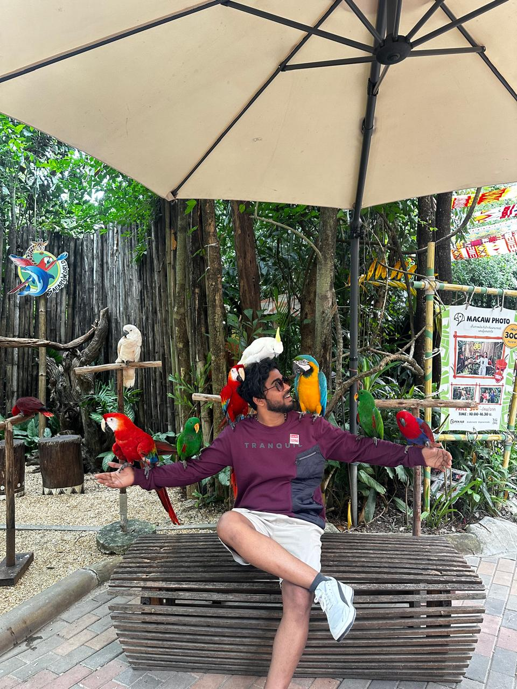

Happy Birthday
For my favorite chaos, Looseeuu 💙

It's crazy how someone miles away became so close so fast. You were just a random chat that turned into one of my favorite people.
Who cares about kilometers when vibes match this perfectly? You make distance feel like nothing.
Happyyy Birthdayyy my crazy friend!! 🎉🎂
First of all, can you believe we became this close in such a short time? You literally came into my life so late, but still managed to become one of the most important people. Like seriously, how did that even happen? 😭😂
Even though we're from different states and speak in English that sometimes doesn't even make sense 😅, somehow we understand each other perfectly. That's what makes our friendship so special — it's pure chaos, full of laughter, teasing, and random deep talks at the weirdest times 😆
You always make things lighter with your jokes (and your "loose" brain 😜). But honestly, you're such a genuine person—fun, caring, and always there when I need someone to talk to. I might tease you a lot, but I actually appreciate you more than I say.
Thank you for being that unexpected friend who turned into someone I can't imagine my days without. You've made my life a little brighter (and definitely noisier 😂).
So on your special day, I just want you to smile big, laugh louder, and eat a lot of cake (send me some too okay 😋). You deserve all the happiness in the world, looseeuu.
Once again, Happy Birthday! 🎈
Don't ever change, stay the same crazy, funny, and kind person you are.
With lots of love (and endless teasing),
Your queen😁💛
Somehow we understand each other even when we don't make sense — that's our magic, Looseeuu.
Happy Birthday once again! 🎉